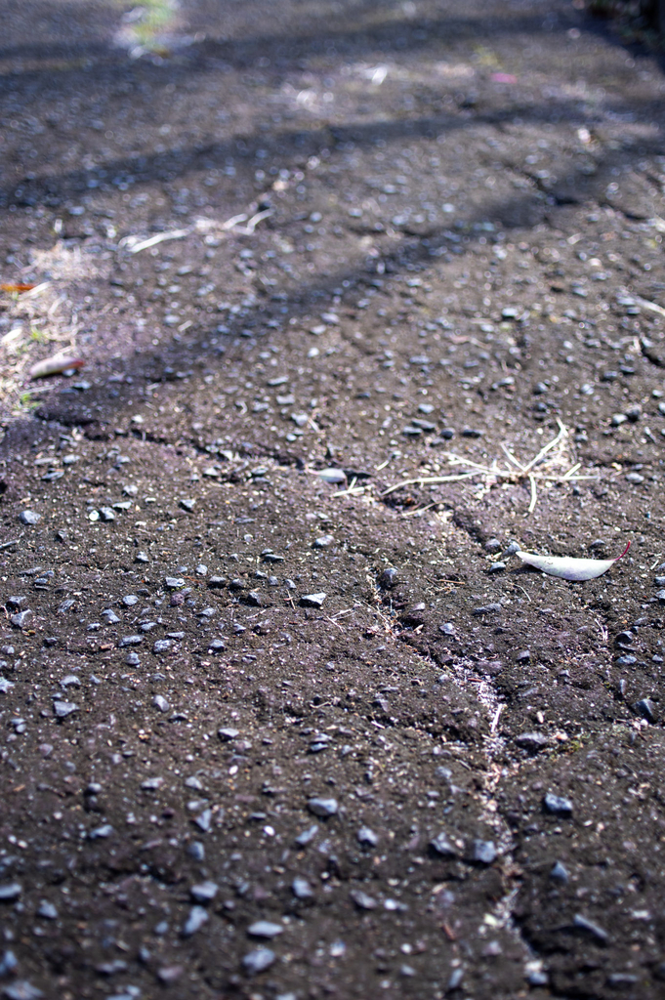

01 月 28 日 ( 火 )
より安全なバイク走行に向けて (2) -現場検証編-
先日の落車事故の環境因を頭に叩き込むために、事故現場に行ってきた。
事故現場は公園内の坂道なのだけど、道は左の図のように、始めのうちは坂ではなく水平である。だが道が途中で見えなくなっていることから、その先は下りになってることがわかる。地元の公園内なので、その先が坂であることは当然知っている。もちろん減速もしている。
坂の 5、6m 手前まで来ると、坂と坂の下の水平になっているところが視界に入る。
坂の斜度は左の図程度で、さほど急とはいえない。
ところが坂を 10m ほど下ったところに、こんなものが登場する。
左の画像の赤矢印で示したところに柵があるが (クリックすると拡大表示される)、この蓋はそこから左に伸びている。左手側が位置的には高くなるのだけれど、公園左側の排水をスムースにするために、溝と排水口が設けられている。鉄の蓋はこの溝を塞ぐ目的で設置されている。
つまり本来は公園利用者の安全のための蓋である。
左は蓋の坂の上側の画像である。段差にして 1cm くらいである。
今度は蓋の坂の下側の画像である。段差にして 1.5cm くらいである。
なんでもない段差に見える。
実際、26 インチ車や 27 インチ車であれば、段差で車体が揺れて不快と思うかも知れないが、危険性を特に感じることなく通過できるであろう。坂の距離も短いので、スピードもでない。危険な要素をまったく感じることができない。
だが、先日の落車事故では、最初にここでフロント・ホイールのコントロールを失った。ブレーキをかけて低速で下っており、特に蓋や路面が濡れているわけでもないにもかかわらずだ。
ここで何が起きたのか。
そもそもアップライト姿勢で乗車することになる小径車では、フロント・ホイールの荷重が不十分になり、グリップを失いやすく、フロント側が特に不安定であることは、昨日の日記で述べた。
それを思い出した上で 1 つ前の画像を見て欲しい。坂の上側の段差である。
この上側の段差で、最初に何が起こるのだろうか。
そう、段差でフロント・ホイールが上に向かって突き上げられるのである。ただでさえ荷重が不十分で、グリップのほとんどないフロント・ホイールは、簡単に中空でブランブラン状態になる。
その直後、フロント・ホイールは、坂の下側の段差によって、より深く落下する。ブランブラン状態のホイールが、より落差が大きな落下運動をしてしまう。物理的に安定しようがない。
先日の落車事故では、最初にここでコントロールを失った。

フロント・ホイールがうねうねと暴れまわる中、その先までなんとか進むと、水平に近いところに到達する。
斜度は左の画像くらいなので、ほぼ水平と言って良い。
20 年以上整備されていないので、舗装も凸凹になっているし、ひび割れもあるので、お世辞にもいい路面状態とは言えない。とはいえ水平には違いない。
ただこの水平部は 30m も続かない。さっきの鉄蓋でバランスを失った車体を、その距離で立て直して停車できればいいが、それはかなり難しい。自分はここで停車できなかった。バランスを失って転倒を防ぐので精一杯だったからだ。
そして最期の坂が現れる。
ここもさほど急だとはいえない。
しかし車体のコントロールは、ほぼ失われている。
もうすでに気づいている人もいるかと思うが、左のこれである。

8mm くらいの突き上げ段差。
+1cm くらいの下落過剰段差。
この最後の 2 つの段差が、フロント・ホイールが暴れまわる走行バイクにとどめを刺した。
この鉄蓋から 1m も進まないうちに、全身が前方下方向に吹き飛ばされ、顔面からアスファルトに激突し、顔面の肉をすりおろし、顔面の肉を引きちぎるということになった。
この現場検証からわかるように、アップライト姿勢で乗らざるを得ないような設計の小径車の場合は、わずか 1 cm かそこらの段差で、いとも簡単に制御を失い、少なからぬ怪我を伴う落車事故になってしまうと言える。
今回の事故は段差が直接の引き金となったが、これは「止まれ」などの路面表示や、その他の路上のありとあらゆる構造物でも同様だと思われる。荷重が足りないホイールだと容易にスリップしたり、ホイールが制御を失う。自転車に限らないが、やはり物理法則には逆らえない。
なので、このような不安定なバイクは、下りの坂道ではバイクを降りて、ブレーキをかけながら手で押せ、そうでなければ事故る、としか自分にはもう言えない。
参考動画
下の動画はスポーツタイプのミニベロの落車事故の映像です。事故の原因となったポイントが解説されています。こんなわずかな段差で！？ってなるかと思いますが、なるんです。
- Category :
- #日記
- #blog
- #tag